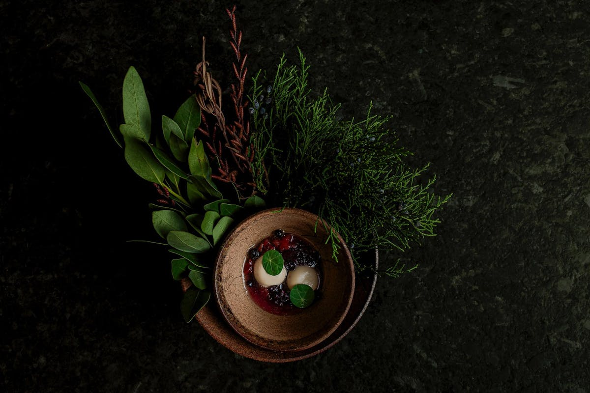
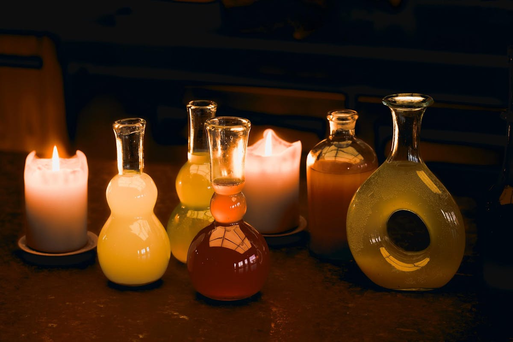
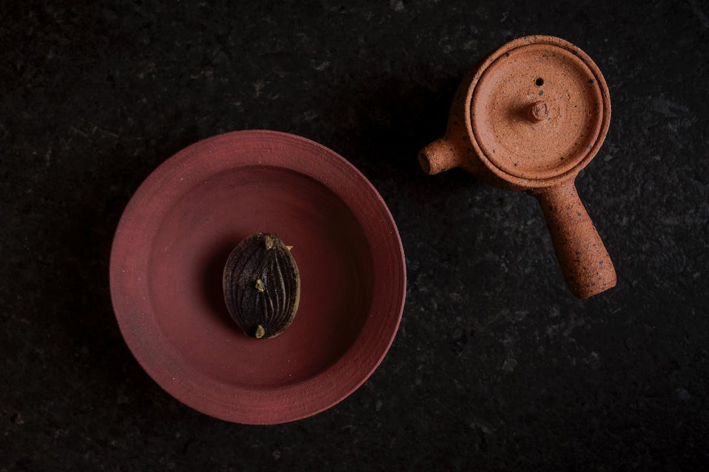
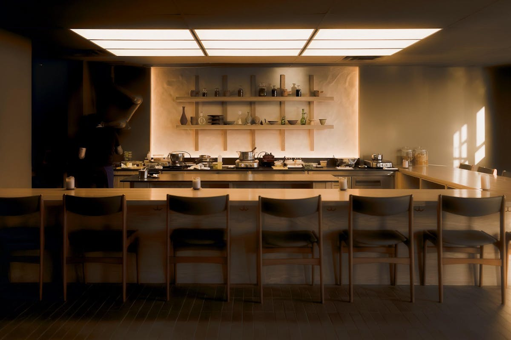

Antheia is Ottawa's most significant restaurant opening since Atelier opened in 2008.
Most restaurants build a reputation after they open. Antheia arrived already carrying one. Chef Briana Kim closed her celebrated Little Italy restaurant Alice in early 2024 at what was arguably its peak — Canada's 100 Best has noted that Alice would have ranked 20th on their 2024 list had it still been open to be considered. Kim closed it anyway, choosing to spend nearly two years building something more ambitious in its place.
Canada's 100 Best described Antheia, before it had even opened, as the "keenly anticipated successor" to Alice — a restaurant built around a twelve-seat chef's counter and a handful of additional tables, with a purpose-built fermentation environment at its centre. That kind of anticipation, for a restaurant that hadn't yet served a single guest, is not something Ottawa's dining scene generates often.

Antheia isn't really a first restaurant. It's the culmination of a progression that runs from Café My House through Alice and into a space purpose-built around a single idea. Kim has said that the limitations she encountered at Alice — the difficulty of scaling serious fermentation work without a genuinely controlled environment — helped motivate the more deliberate setup at Antheia. Where Alice worked with what space allowed, Antheia was designed from the ground up around a fermentation research lab that happens to also serve dinner.
The restaurant now operates as a sixteen-seat fermentation R&D lab and chef's counter, with the kitchen and lab fully integrated into the dining space itself. Guests aren't watching a kitchen at a distance — they're seated inside the same room where the ongoing research is happening.

Atelier opened in 2008 into a very different Ottawa. Contemporary coverage at the time described the city's dining scene as shifting from safe to spectacular, with Atelier among a small handful of new restaurants bringing something genuinely unexpected to the capital.
The comparison isn't that nothing good has opened in Ottawa in the seventeen years between the two restaurants — plenty has. It's that both openings represent something rarer: a restaurant built around a culinary idea, rather than simply a cuisine or a conventional business model. In 2008, that idea was modernist cooking and tasting-menu experimentation. In 2025, it's fermentation, plant-focused tasting menus, and something closer to culinary research and development than traditional restaurant service. Both are unusually conceptually ambitious openings for a city this size.
Antheia opened its doors on December 7, 2025 — which gave Canada's 100 Best judges less than a month to visit and consider it before their 2026 ballots closed. It debuted at #76 anyway.
A restaurant open for less than a month landed on a national ranking most restaurants spend years working toward.
That timeline matters. It suggests Antheia arrived as a nationally significant restaurant almost immediately, rather than needing years to build toward that recognition the way most restaurants do.
Canada's 100 Best 2026 includes exactly three Ottawa restaurants: Atelier at #54, Antheia at #76, and Arlo at #77 — down from four the previous year. Antheia isn't just another opening in that context. It's another nationally recognized restaurant in a city that has historically lacked the depth of Toronto, Montreal, or Vancouver on lists like this one.
One detail in particular makes the restaurant feel more researched than promotional: Antheia's fermentation program doesn't stop at the food. Its house-made beverage pairings are fermented as well, designed alongside each course rather than treated as an afterthought — a non-alcoholic pairing built with the same rigour as the dishes it accompanies.

Seventeen years apart, two restaurants built around an idea rather than a formula — and a city's dining scene that looks different because of both of them.